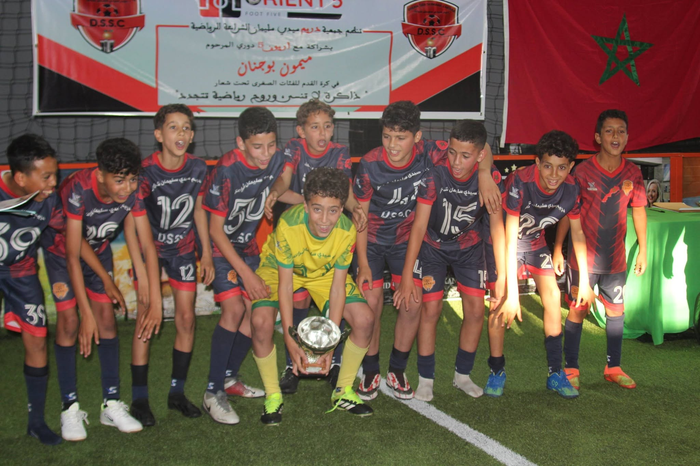
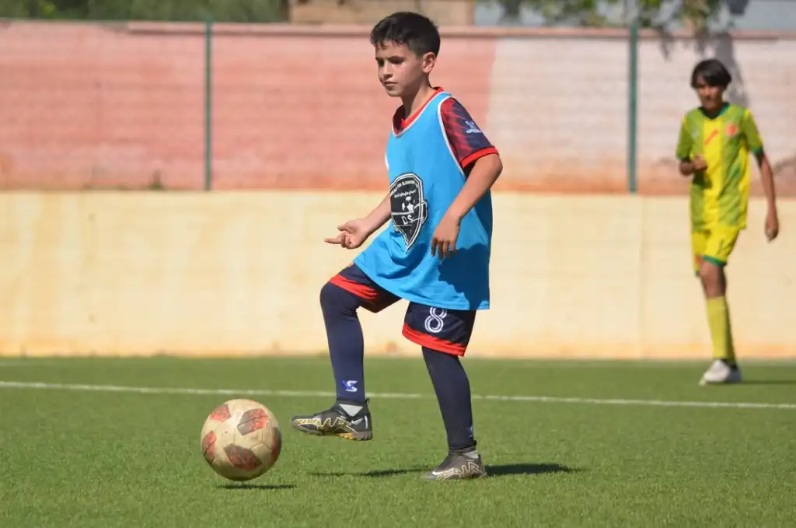
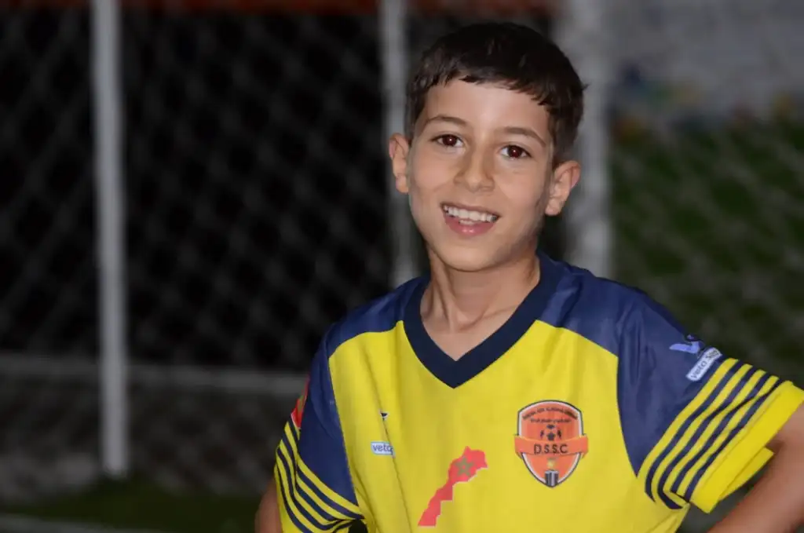
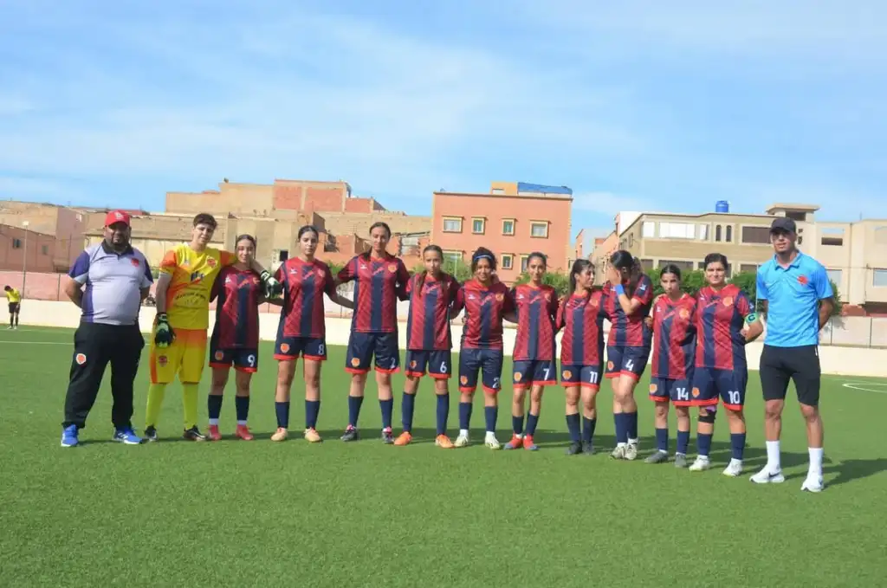
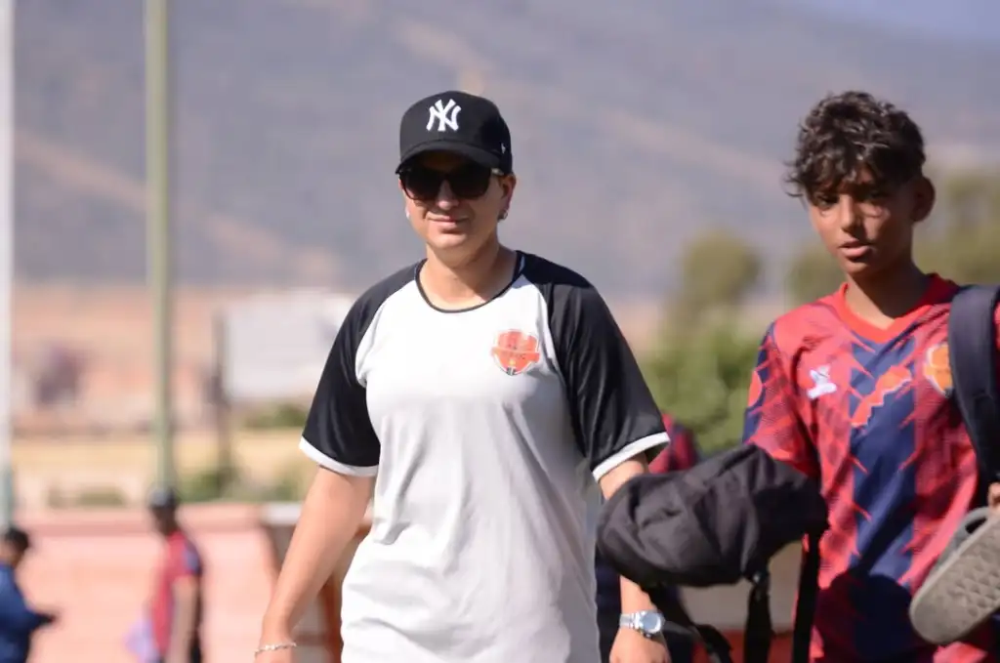
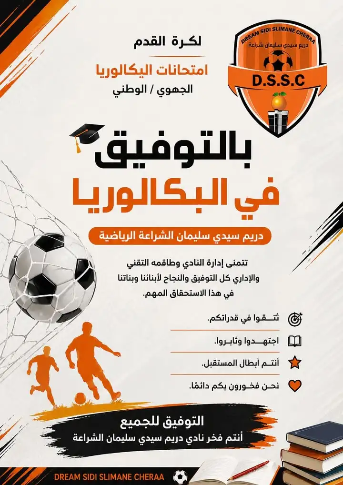
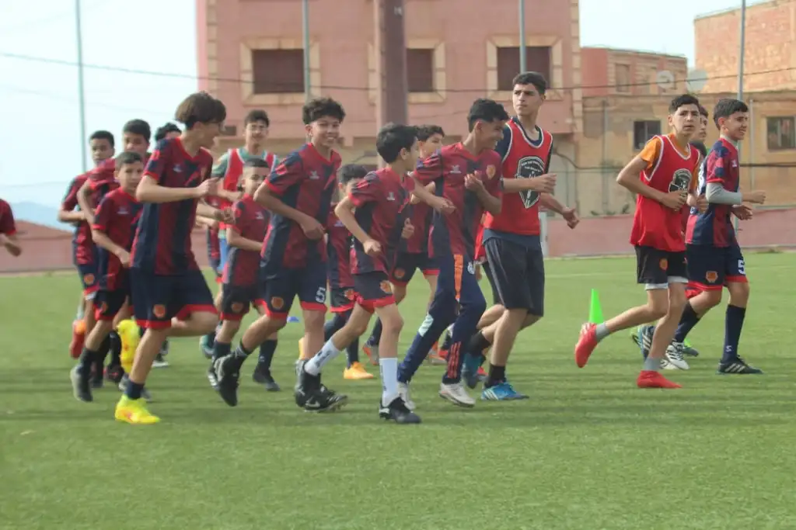
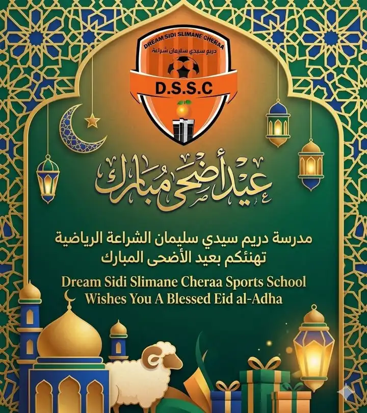

Stade Municipal Sidi Slimane Cheraa
- Mercredi : 15h00 - 16h30
- Vendredi : 17h00 - 18h30
- Dimanche : 09h00 - 11h00
 D.S.S.C.
D.S.S.C.
Berkane - Association de Football - Sponsoring
Plus qu'une association, Dream Sidi Slimane Cheraa forme garçons et filles dans un cadre inclusif et motivant, en alliant sport, éducation et engagement pour la communauté.
 Ensemble pour l'excellence
Ensemble pour l'excellenceEntraînements
L'association
Moments de départ marquants

Opportunités de partenariat
Votre contribution participe directement à la formation et à l'épanouissement des jeunes footballeurs, tout en valorisant votre image auprès des familles et de la communauté sportive locale.
1. Académie indépendante Dream Sidi Slimane Cheraa - formation complète U6 à U17.
2. Partenariat Académie Orient Five - encadrement de qualité pour les catégories U6 à U12.
Soutien financier pour le matériel, les infrastructures et les activités.
Contribution pour l'organisation de stages, matchs et événements éducatifs.


Nos services majeurs
Participation régulière à des matchs et tournois locaux et régionaux, permettant aux joueurs de mettre en pratique leurs compétences et d'acquérir une expérience précieuse en situation réelle.
Programme d'entraînement
U6 à U17, garçons et filles. Développement technique, tactique et physique, respect et esprit d'équipe.
U6 à U12. Pédagogie professionnelle, installations haut de gamme, épanouissement dans un cadre sain.
Équipe féminine


Championnat de ligue Orientale


Pendant la saison 2025-2026, l'association Dream Sidi Slimane Cheraa a rejoint la compétition et la catégorie U13 garçons enchaîne les confrontations contre les équipes de la ligue orientale.
Événement sportif

La première édition du tournoi feu Mimoun Boujnane, organisée par Dream Sidi Slimane Cheraa Sportive en partenariat avec l’Académie Orient Five, s’est clôturée dans une ambiance sportive exceptionnelle, marquée par le fair-play, l’esprit de compétition et le respect entre toutes les équipes participantes.
Champion : Dream Sidi Slimane Cheraa Sportive
Finaliste : Association Chabab Boujir
Champion : Al Manar Sportif Nadori
Finaliste : Club Noujoum Berkane
Ce tournoi a connu la participation de plus de 100 jeunes joueurs, qui ont montré de belles qualités techniques et physiques, offrant au public un très bon niveau de jeu.
La cérémonie de clôture a également été marquée par plusieurs hommages rendus à des acteurs sportifs et associatifs, en reconnaissance de leurs efforts et de leurs contributions au développement du football local.
Nouveautés & activités récentes
Une section ajoutée pour rendre le site vivant avec les dernières activités visibles publiquement : séances communes, retour aux entraînements, développement technique, matchs féminins et encouragement scolaire.

03-04 Juin 2026
Dans le cadre du partenariat sportif avec l'académie Arion 5 / Orient Five, une séance d'entraînement commune a réuni les joueurs dans une ambiance de concurrence loyale, de discipline et de progression technique.

Travail de contrôle de balle, passes, réception sous pression, vitesse, souplesse et petits matchs pour renforcer la compréhension tactique.

La publication met l'accent sur l'enthousiasme des jeunes, l'esprit collectif, l'entraide, la coopération et la persévérance.

L'équipe féminine a obtenu un match nul positif contre le Club Filles Oujda après une remontée en deuxième mi-temps.

Après la pause de l'Aïd, l'école a annoncé la reprise officielle des entraînements au terrain municipal de Sidi Slimane Cheraa.

Message d'encouragement aux élèves passant les examens du baccalauréat, dans l'esprit sport-éducation du club.
Plus qu'une association
Distribution de certificats d'excellence académique, sorties ludiques et excursions sportives pour renforcer la cohésion et le plaisir d'apprendre en équipe.


Actions écologiques telles que la Journée mondiale de la forêt et de l'eau pour sensibiliser les jeunes et la communauté à la protection de l'environnement.

Nouveautés & activités récentes
Cette partie enrichit le dossier initial avec des activités publiques récentes de la page Dream Sidi Slimane Cheraa Berkane Foot : séances communes, retour aux entraînements, match féminin, messages éducatifs et moments communautaires.
Dans le cadre d'une collaboration sportive, les joueurs ont participé à une séance commune marquée par l'enthousiasme, la compétitivité saine et l'esprit sportif. La séance a permis l'échange d'expériences, le développement technique et physique, ainsi qu'une préparation plus structurée aux prochaines échéances.


La page met en avant une séance dynamique au terrain de Sidi Slimane Cheraa : contrôle du ballon, passes et réception sous pression, vitesse, souplesse, matchs réduits et compréhension tactique des rôles sur le terrain.

Les publications insistent sur l'encouragement des enfants, le suivi des parents, la discipline, la coopération, la persévérance et la motivation continue.
Reprise officielle des entraînements au terrain municipal de Sidi Slimane Cheraa avec une ambiance pleine d'énergie, de concentration et d'ambition pour continuer le développement des compétences footballistiques.
Programme technique enrichi
Les activités récentes montrent une progression claire : le club ne se limite pas aux matchs. Les joueurs travaillent la technique individuelle, la coordination, l'explosivité, la lecture du jeu, les transitions, les mini-matchs, l'écoute des consignes et la responsabilité collective.

Vie du club

La rencontre s'est terminée sur un match nul positif. Après une première période difficile, l'équipe féminine est revenue avec caractère et a réussi à égaliser grâce à l'engagement et à l'esprit de combat jusqu'aux dernières minutes.

Le club a publié un message de soutien aux élèves et joueuses/joueurs qui passent les examens régionaux et nationaux, rappelant que la réussite sportive doit aller avec la réussite scolaire.

La page garde un lien constant avec les familles : vœux de l'Aïd, annonces de reprise, messages de soutien et communication régulière autour de l'école de football.
Pour rendre le site plus riche
Contrôle, passe, conduite, tirs, coordination, duel, conservation du ballon et prise d'information.
Vitesse, souplesse, agilité, endurance adaptée à l'âge, échauffement collectif et prévention.
Respect, écoute, discipline, ponctualité, esprit de groupe, confiance et dépassement de soi.
Matchs amicaux, championnats, tournois, catégories U13, filles et garçons, avec suivi du staff.
Communication avec les parents, encouragements scolaires, événements sociaux et messages de solidarité.
Photos, réseaux sociaux, affiches, maillots, événements, activités extra-sportives et storytelling du club.
Chronologie enrichie
Match nul positif face aux Filles d'Oujda, avec réaction forte en deuxième période et égalisation méritée.
Message de vœux à toutes les familles, supporters et membres de la communauté Dream.
Retour officiel au terrain municipal avec concentration, énergie et ambition.
Encouragement des élèves avant les examens du baccalauréat : sport et éducation ensemble.
Travail du contrôle, des passes, de la vitesse, de la souplesse et des petits matchs tactiques.
Séance commune avec l'Académie Arion 5 pour renforcer l'échange d'expérience et la préparation.
arguments pour sponsors
Présence sur équipements, maillots, affiches, roll-ups, événements et photos de groupe.
Mise en avant dans les publications, albums photos, annonces d'entraînement et communications du club.
Soutien direct à l'encadrement des jeunes, aux filles, à l'éducation et aux activités communautaires.
Journées portes ouvertes, mini-tournois sponsorisés, remise de certificats et actions environnementales.
Galerie enrichie
Contact
#BERKANE-EN-AVANT